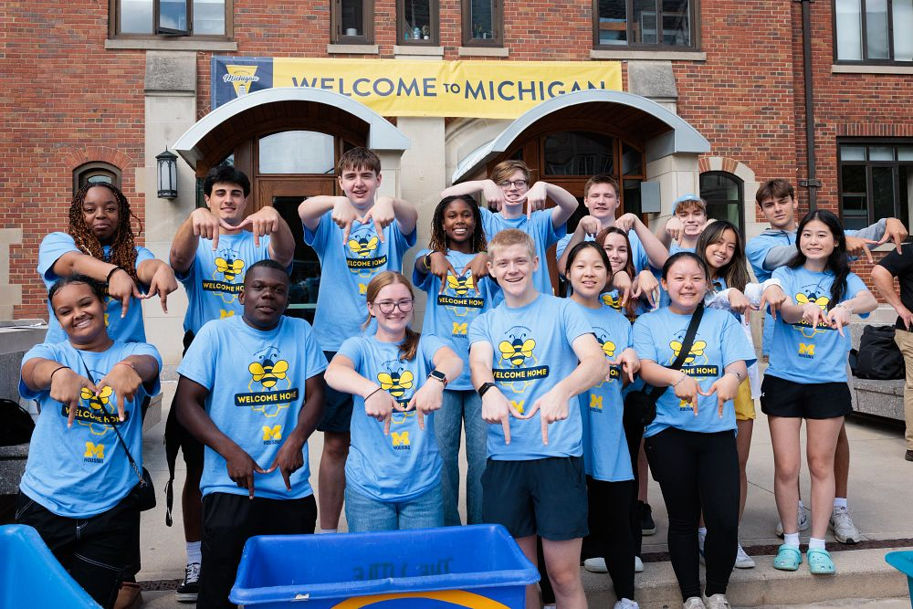

Michigan is our Home
Did you know there are approximately 4,000 students at the University of Michigan who are among the first generation in their family to attend college? While being the first to do anything can be a bit daunting, going off to college is also a major life milestone.
Thankfully, there are useful networks and programs at U-M that can help you connect and thrive on campus. Use this website to help you find the resources you need. Explore your options. Find your community and your way. Make yourself at home.
Am I a first-generation college student?
At the University of Michigan, undergraduates and graduate students are considered first-generation college students if neither parent or guardian has completed a 4-year college or university degree.
This definition includes students with other family members (siblings, cousins, grandparents, etc.) who have completed a four-year degree.
History
The First-Generation Student Program is grounded in a history of student activism. First-Generation College Students @UM, a student organization, was founded in 2007 with the mission to increase accessibility to resources for first-generation students and to build community among the population. The students advocated for greater campus support for themselves and other peer first-generation students. In 2017, University of Michigan hired the inaugural first First-Generation Program Manager, established the First-Generation Gateway Office, and launched multiple initiatives to increase first-generation student success. As a result, student engagement has increased significantly since 2017 and University of Michigan’s first-generation efforts have received national recognition.
Above all, we hope this site helps you open doors and connect with U-M’s community of first-generation students and those who will support and encourage you throughout your journey.
First-Generation Gateway Hours and Location:
Summer Hours: Monday – Friday 9:00 – 3:00 PM
Location:Third floor of the Student Activities Building in the Office of Academic Multicultural Initiatives.
Questions for the First-Gen Gateway Staff? Email us at firstgeninfo@umich.edu